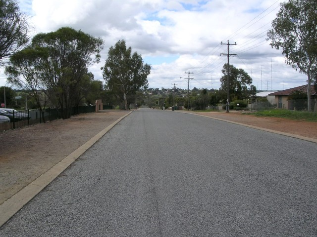
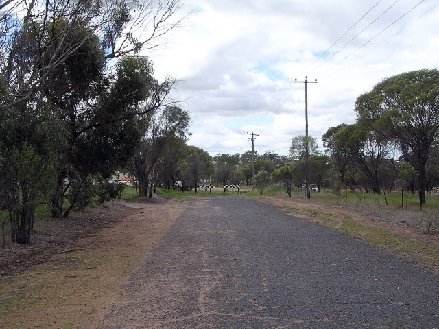
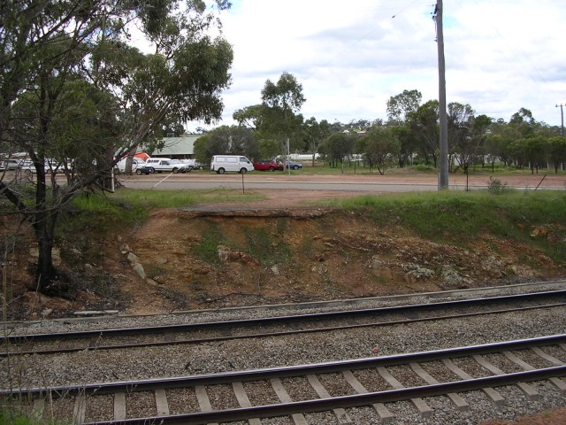
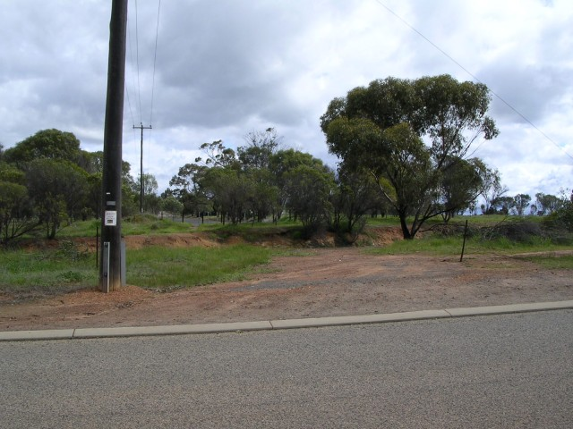
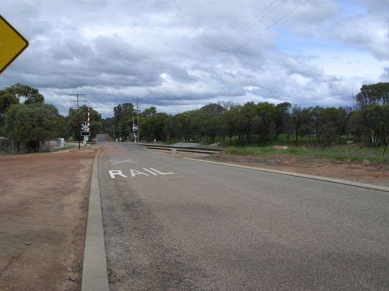
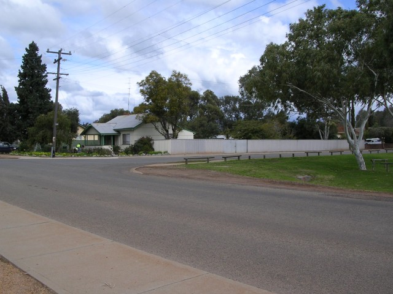
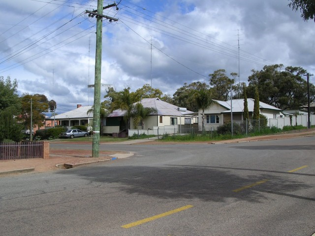
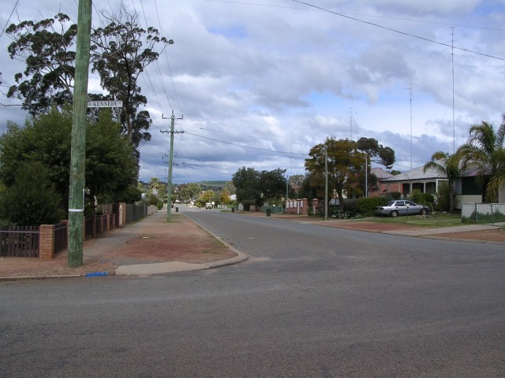

Numbers on the map represent the location where the photographs were taken. Scroll down to view the photographs.
Northam (North Circuit) - Hutt via Clarke and Kennedy to Hampton
|| Contents || Hutt / Clarke / Kennedy / Hampton | Forrest / Toodyay / Inkpen / Stirling || Home ||
Numbers on the map represent the location where the photographs were taken. Scroll
down to view the photographs.
Return to racingcircuits.net's Photo Archive Main Index

1 - Start area Hutt Street

2 - Hutt Street cut ahead by railway line
[Standard gauge Sydney to Perth]

3 - Hutt Street cut by railway line

4 - From Clarke Street looking back to Hutt
Street.

5 - Looking left from last photo.

6 - Turn right into Kennedy Street from
Clarke Street.

7 - Entry to left turn into Hampton Street.

8 - Exit of left turn into Hampton Street.
Photographs and Text ©Neil Fackerell. Reproduced here with kind permission.